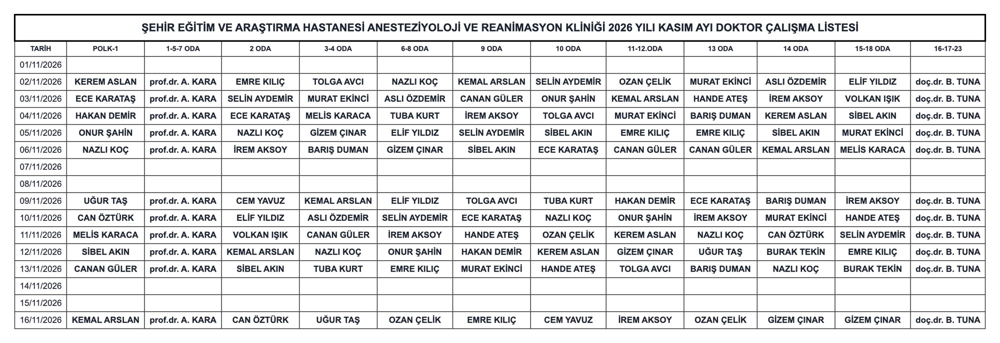
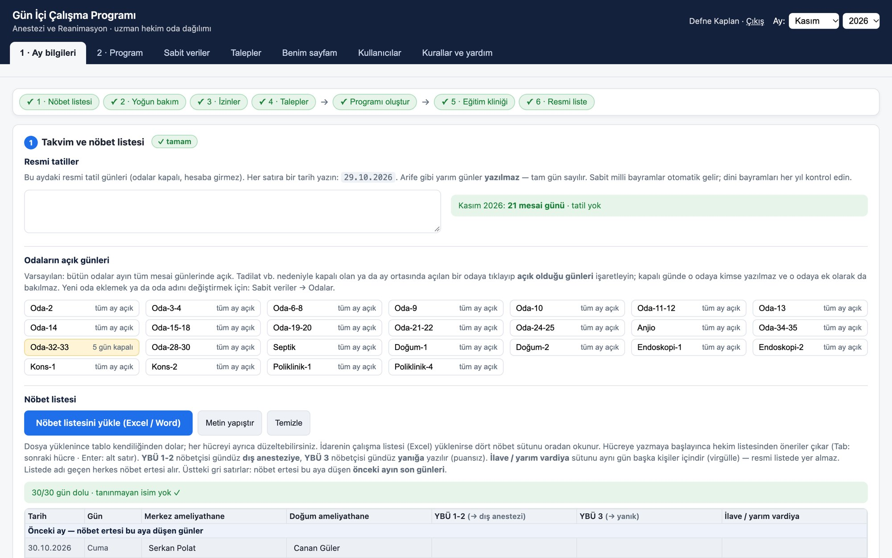
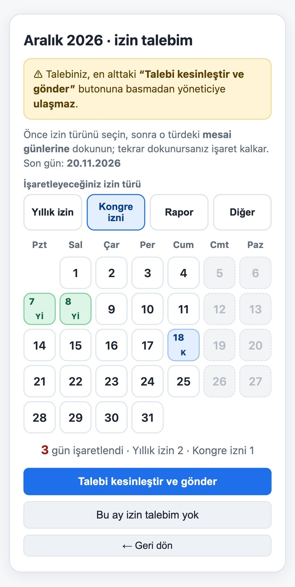
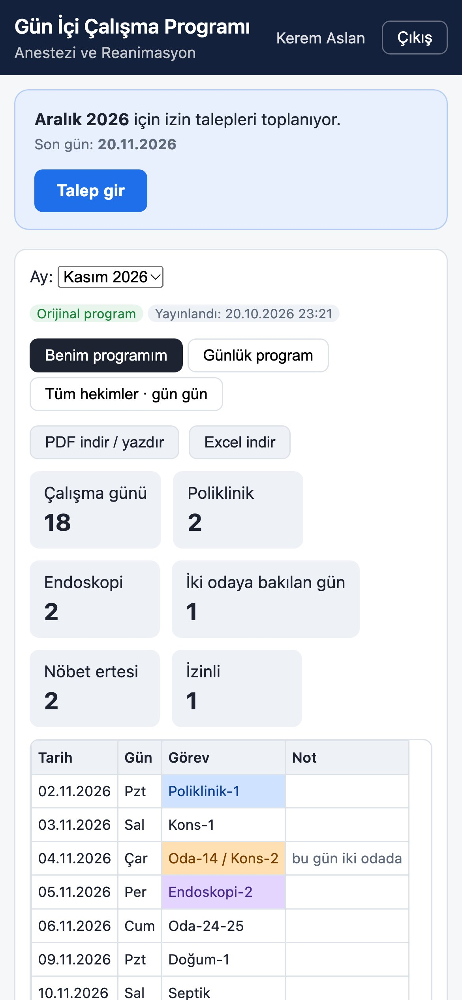
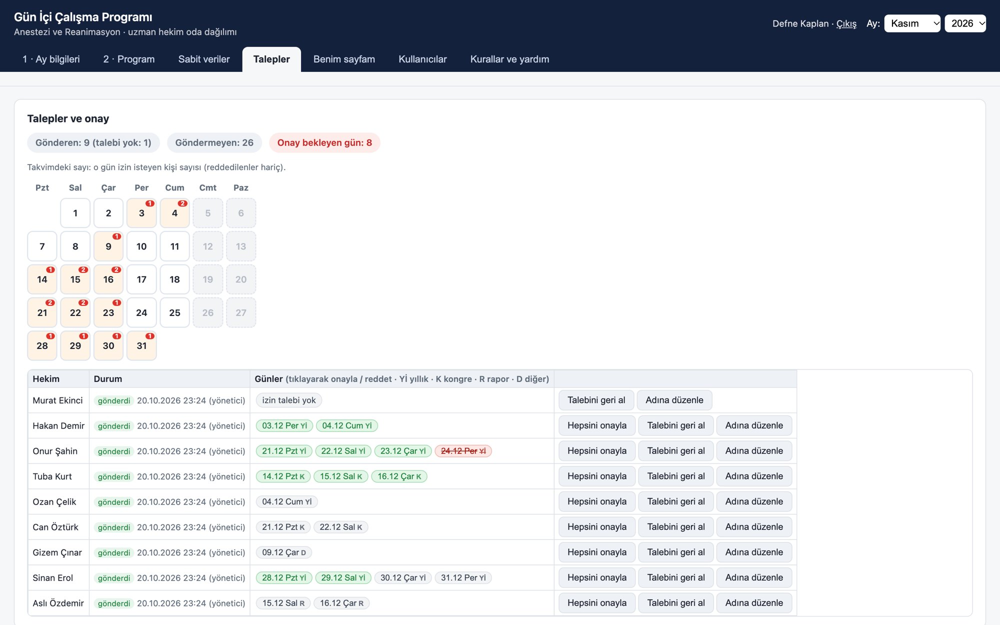
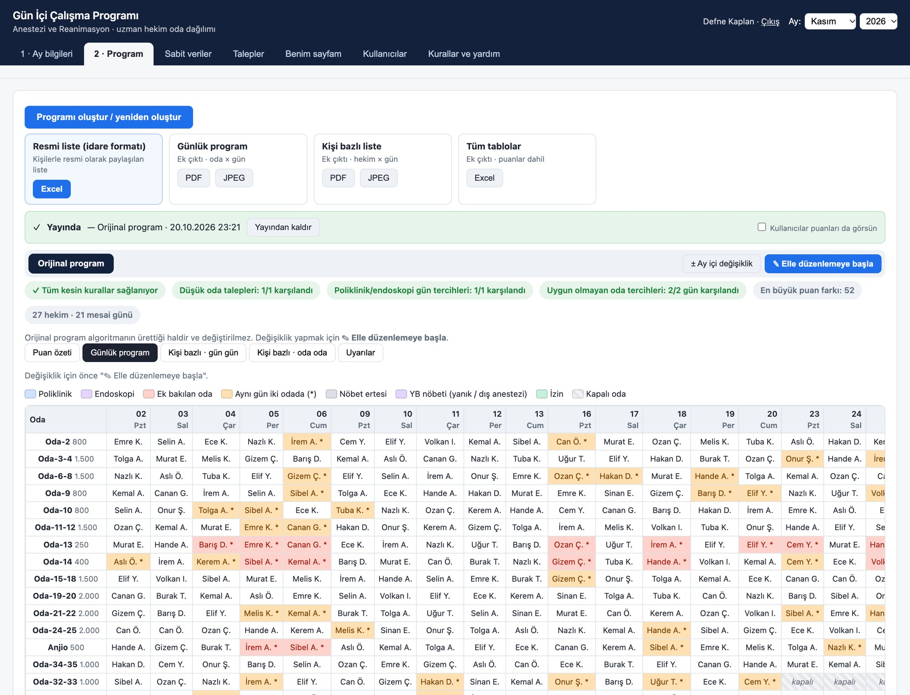
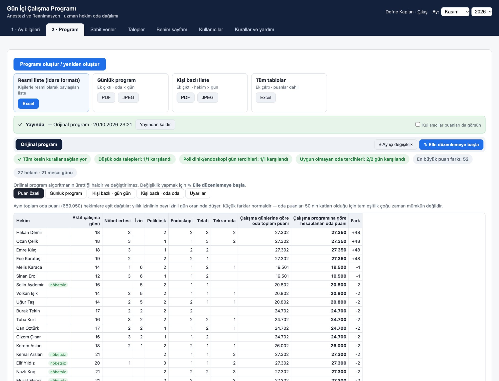
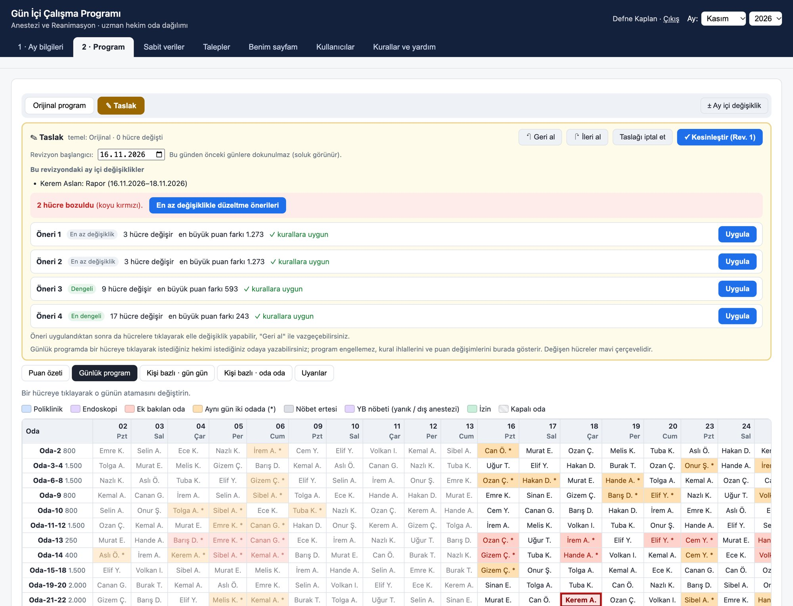
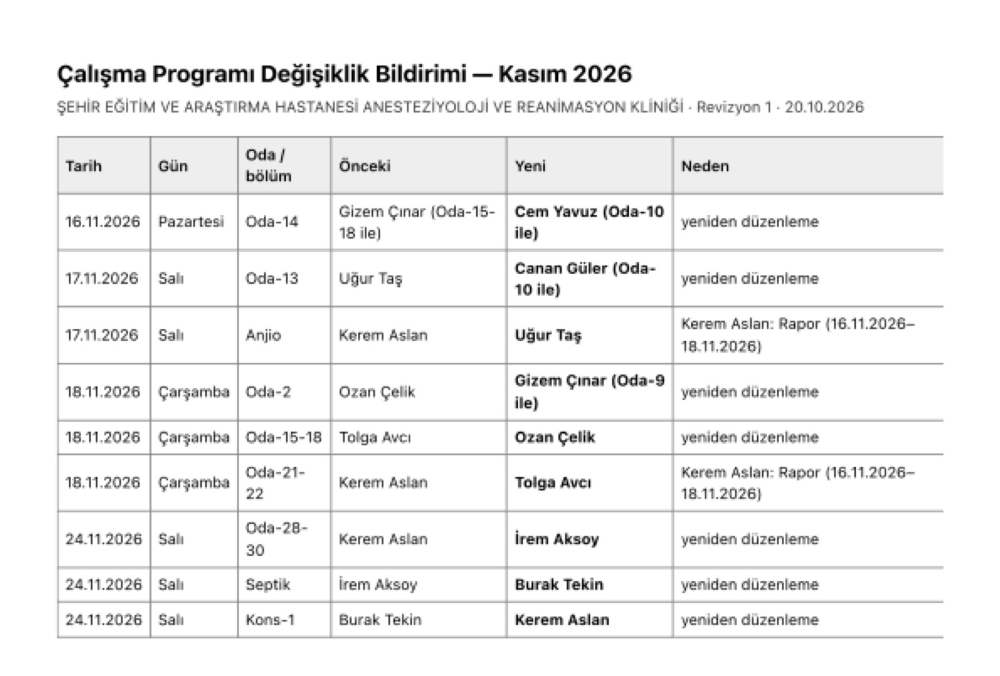
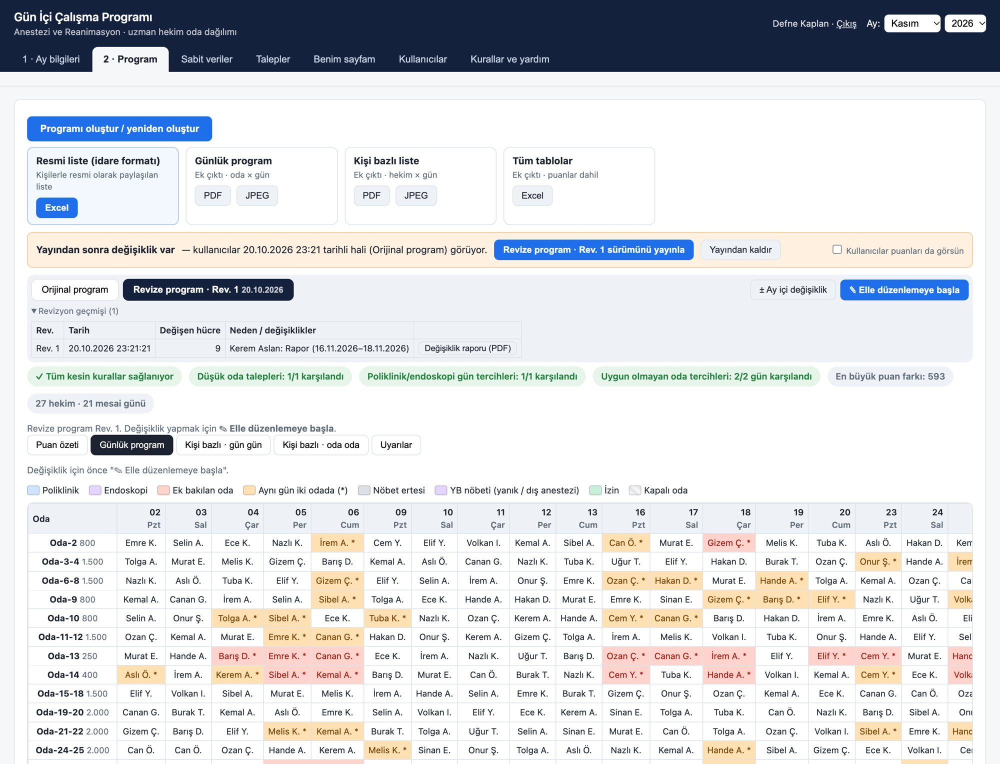

A program that builds fair, rule-based monthly operating-room assignments for the anesthesiology department of a public teaching hospital in Kayseri, Türkiye.
Every month one specialist assigned about 27 anesthesiologists to 25 work areas for every working day — by hand.
Goal: a program that never breaks a rule, makes the monthly totals as equal as possible, and fits the department's real workflow.






Under the hood: an optimisation algorithm (simulated annealing) explores millions of possible assignments.

Doctors on leave have their target reduced in proportion to the days they work, so leave never “costs” anyone points.



Outputs
Privacy
Timeline (2026)
Zeynep's role
How it was built
The program was built with AI-assisted development (Anthropic's Claude), through many design-and-test sessions driven by the department's real needs.